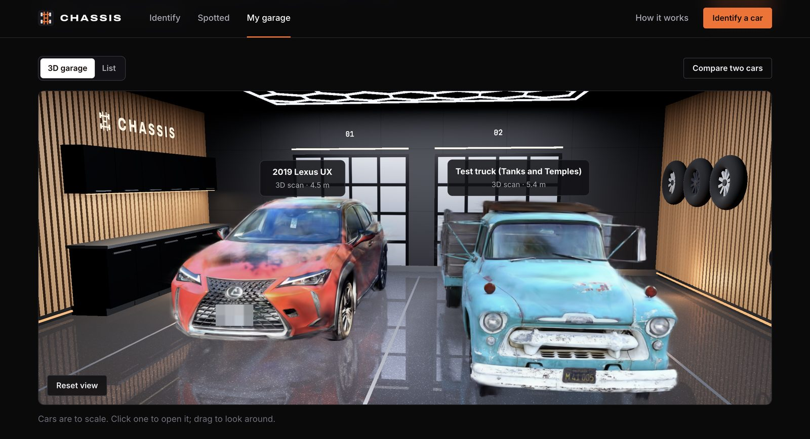
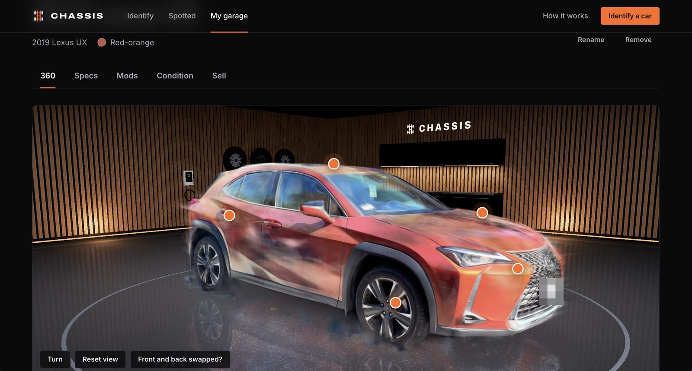

04 / 06
- Context
- Personal, solo
- Role
- Everything
- Status
- Open source
- 81%
- exact make and model, held out
- 5 cm
- worst axis, 3D self-scaled
- 1,454
- model families it can name
Chassis
Naming a car from one photo, and rebuilding it in 3D at true size
A Mac app that identifies a car from a single photo against every model in the EPA’s U.S. records, with a match percentage calibrated on held-out photos so it can be read at face value, and that turns a thirty second walk-around video into a Gaussian-splat model standing at its real size.

What it is
Chassis does two things on a Mac, with nothing leaving it. One photo gives the make, model and likely model years, matched against every model in the EPA’s U.S. records since 1984, with the spec sheet, recalls and crash ratings behind it. A thirty second walk-around video becomes a photoreal Gaussian-splat model of that car, standing upright at its true size.
The rest of the app sits around those two: a collection of cars you have spotted, paint and wheel previews, a condition record, a sell kit, and a garage that parks everything side by side to scale. None of that is the interesting part.
A confidence number that means something
Identification is zero-shot. YOLO11 segmentation finds the largest vehicle and squares up a crop around it, then SigLIP embeds that crop and also embeds a short sentence for each of the 1,454 model families in the EPA data, two phrasings averaged, so the nearest sentences are the candidates. Nothing is trained on car photos. The year range works the same way, one sentence per model year, and the range grows outward from the best year until it holds 90% of the year probability or reaches five years, whichever comes first.
When a guess is not good enough there is a way out of probability altogether. Point it at the VIN and EasyOCR reads the windscreen plate, door sticker or registration. North American VINs carry a check digit in position 9, so a misread can be told from a real VIN rather than trusted blindly, and the characters that OCR habitually confuses, S for 5, B for 8, Z for 2, G for 6, D for 0, are swapped until the check digit agrees. NHTSA then confirms the decode. It is a small thing, but it is the difference between an OCR result and an identification.
That gives a percentage next to every answer, and a percentage is worthless unless it tracks reality. So it was measured.
Measuring it without marking my own homework
The test set is Stanford Cars, 600 photos the model had never been tuned on. Getting there took some care. Stanford labels look like acura tl sedan 2012, which has to be matched to an EPA model family before anything can be scored; 24 of the 196 classes have no EPA family at all, because they were never sold in the U.S. with an EPA rating, and those are reported and dropped rather than quietly counted as misses.
The year-range settings were tuned on the first 600 photos of a fixed shuffle. The numbers below come from the next 600, which played no part in that. Running both tells you how much the tuning bought: 82.3% on the photos it was tuned against, 81.0% on the ones it had never seen. A gap that small is the point of splitting them.
On the held-out 600: 81.0% name the exact make and model, 96.8% have it in the top five, 95.7% get the make right, and 86% of the year ranges contain the true year, with ranges averaging 4.6 years. It takes 0.8 seconds a photo on an M1 Pro.
What it gets wrong is as informative as what it gets right, so the harness prints the twelve most common confusions. They are almost all one car mistaken for its own sibling: a Ferrari 458 Italia called a 458 Spider, a Jaguar XK called an XKR, a BMW X6 called an ActiveHybrid X6. Those are the coupe and the convertible, the base car and the performance trim, the petrol car and the hybrid. It is not confusing a Ferrari with a hatchback.
One caveat belongs with those numbers. Stanford Cars photos are mostly clean, well-framed shots, so the calibration is measured under easier conditions than a phone photo taken across a car park. The ranking should hold; the exact percentages may not.
From a phone video to a car at real size
The 3D side is mostly not machine learning. ffmpeg samples three candidates per kept frame and takes the sharpest of each slice by variance of the Laplacian, 150 frames at 1600px. Phones film HDR by default, and read naively those frames come out flat and dull, an orange car turning brown, so the HLG or PQ curve is undone at 16 bits and mapped back through HDR’s 203 nit reference white. YOLO11 outlines the car in every frame, and turntable videos are spotted by the background standing still while the car turns.
Then the video is checked before anything slow runs, against thresholds taken from real captures: portrait orientation, the car running off the sides of more than 75% of frames, filling more than 65% of the picture or less than 6% of it, found in under 60% of frames, or a video under 15 seconds. Any of those and the job pauses with the reasons in plain words rather than spending twenty minutes to produce a smear.
COLMAP then places the cameras: SIFT at 6,000 features a frame, each frame matched against its next ten and every fifth frame against every other fifth so the end of the walk finds the start, then incremental mapping. It gets up to three attempts, varying whether masks are used and whether the lens is solved once or per frame, until 60% of frames are placed; under 40% it gives up and says why. Brush then trains the splat for 12,000 steps on the masked frames.
The clean-up is where a splat stops looking like soup. Every splat’s centre is projected into 30 frames and survives only if it lands on the car in at least 60% of the frames that can see it, voting against outlines pulled 10px tighter than the ones used for training. Only the largest connected blob is kept, which is what removes floaters. Long splats have to keep both ends on the body, because streaks reaching off the panel are what make edges look smeared. Then the road goes: splats lying flat at floor level, low ones outside the car’s outline seen from above, and pale ones at pavement height. The floor is set at the bottom of the tyres.
The splat file is only ever filtered, never moved. One transform at the viewer centres it, stands it upright and scales it to metres, so view-dependent colour stays correct.
Getting the size right with nothing to measure against
A reconstruction from a single camera has no inherent scale, and there is no ruler in the shot. If you know your car’s length you can type it. If you do not, the fallback is that the camera itself is the reference: people hold a phone at about chest height while walking around a car, 1.48 m, and the floor position is already known from the tyres.
A Lexus UX filmed on an iPhone scaled itself to 4.49 × 1.84 × 1.49 m, length by width by height. The real car is 4.50 × 1.84 × 1.54 m. Length within a centimetre and width exact, from a phone video and an assumption about how tall a person is. The height comes out about 5 cm low, and an earlier build of the same video, before the clean-up rules were tightened, landed at 4.46 × 1.85 × 1.49 m.

That assumption is also the weak point, and it is worth stating how weak. Every 10 cm the phone sits above or below chest height moves the whole model by about 7%. The floor comes from the lowest 0.2% of splats, the tyre bottoms, and the camera height from the 85th percentile of the path so that a lower second loop does not drag it down. Anything that comes out under 2.8 m or over 7.5 m is rejected as implausible rather than shown.
The last resort, once the guess is refused, is the typical length for the car’s EPA size class, and the code says outright that this one is rough, because EPA classes are decided by interior volume rather than exterior size. Entering the length removes the guess entirely.
Where the work actually is
Two learned models do the perception: SigLIP names the car, YOLO11 finds it. Everything between them is ordinary engineering. Camera placement, the geometric clean-up, the scaling, the frame selection and the HDR handling are all classical, because a car on a flat surface filmed in a circle is a well-posed geometry problem and fitting it beats learning it.
The README lists every model and dataset with its licence, including the ones that are pretrained and not mine, because a reader deserves to know which parts I built.
Honest limits
It needs an Apple Silicon Mac with 16 GB of memory, and about 5.3 GB of models download the first time each feature runs. Because it uses Ultralytics YOLO11 under AGPL-3.0, it is for personal use on your own machine.
One-photo 3D, when there is no video, is a shape sketched by TripoSR and is labelled a guess everywhere it appears. The condition comparison finds a drawn-on scratch on a re-shot photo and flags nothing on an unchanged one, but photos taken from noticeably different spots produce small false outlines near edges, glass and wheels, and the page says so rather than hiding it.
The identification covers models in the EPA’s U.S. records. A car never sold here has no family to match against, and the harness counts that as out of scope rather than as a win.
Stack React 18, TypeScript and Vite · three.js through React Three Fiber, Spark for the splats · FastAPI with a disk-backed job queue and a separate worker · SigLIP So400m, YOLO11, EasyOCR, BiRefNet, TripoSR · pycolmap structure-from-motion · Brush splat training · EPA and NHTSA public data · vitest and Python test suites
Source Runs locally on Apple Silicon and the models download on first use, so there is no hosted demo.